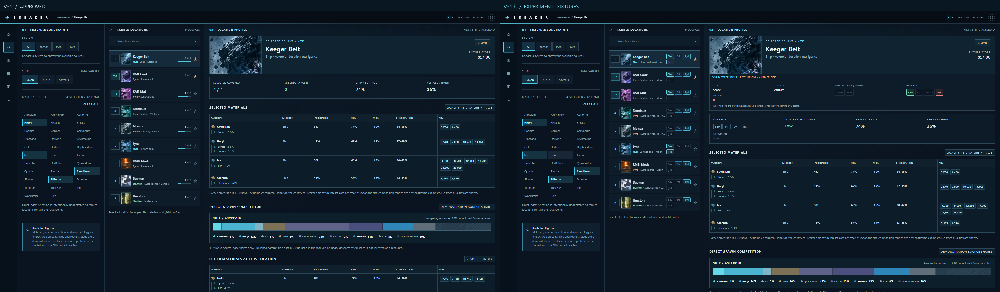
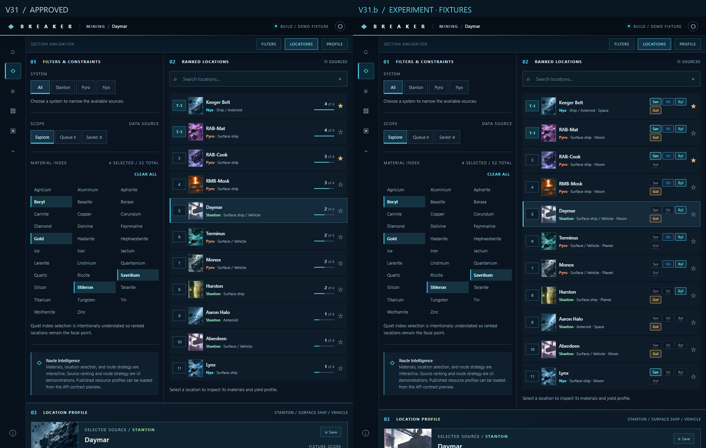
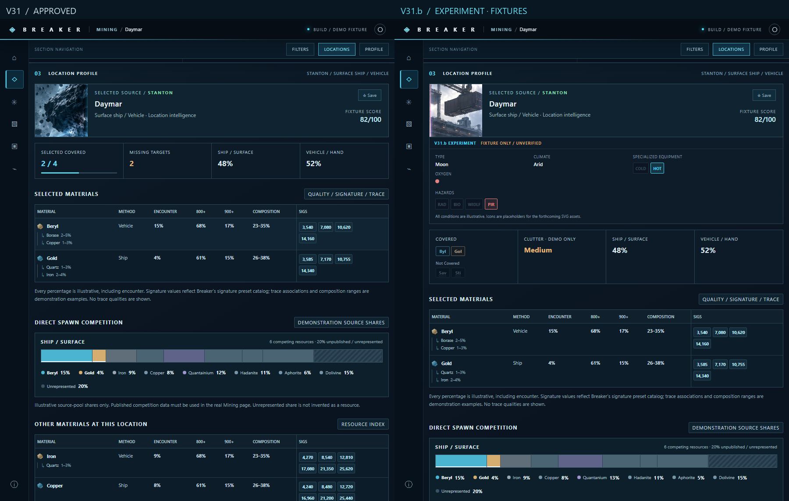
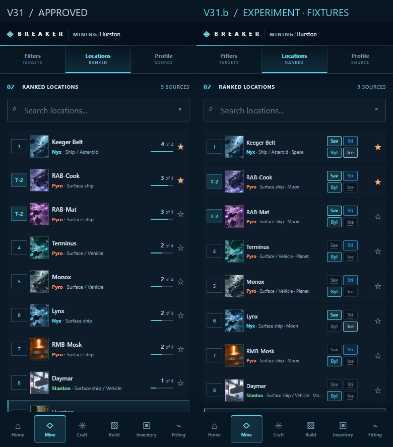
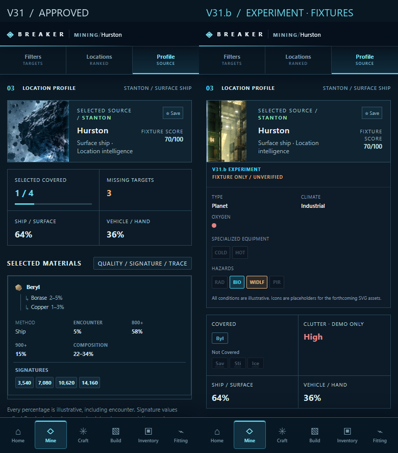
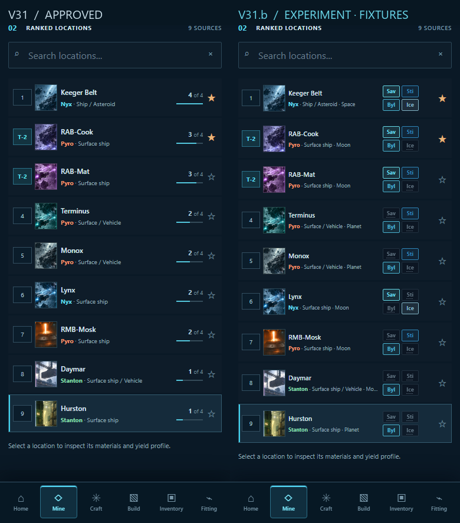

1920 x 1080 | Space / full / clutter low



900 x 1100 | Moon / partial / ranked



900 x 1100 | Moon / partial / profile



390 x 844 | Planet / missing / ranked



390 x 844 | Planet / missing / profile



390 x 844 | Planet / missing / selected row
